Puran Poli Recipe
My delightful Puran Poli recipe with step-by-step photos will show you how to make the traditional Indian treat. This lentil stuffed sweet flatbread is a popular Maharashtrian recipe made during Ganesh Chaturthi, Diwali, Holi or any other festive occasion. While it does take a bit of skill and patience to make, the results are well worth it! And as an added bonus, this sweet recipe also happens to be pretty darn nutritious, meaning you can even eat it for breakfast.
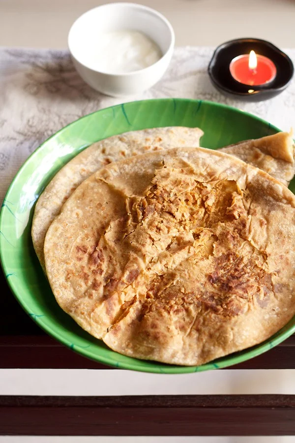How to make Puran Poli
Cook Chana Dal
1. Rinse 1 cup of chana dal very well in water. I didn’t soak the chana dal, but you can soak the chana dal for 30 minutes to one hour and then drain the water.
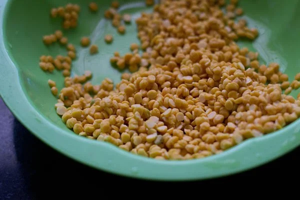2. In a 3 litre stovetop pressure cooker, cook the chana dal with 3 cups of water for 6 to 7 whistles on medium heat. The dal need should not be mushy or pasty but cooked tender and softened.
Allow the pressure to release naturally in the cooker, then strain the cooked dal. Keep the dal in the strainer for several minutes so that all the stock is drained. The cooked lentils have to be drained very well.
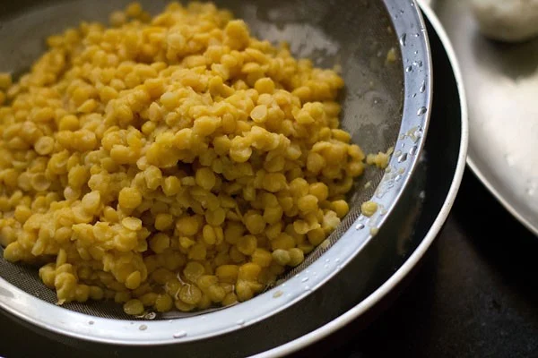Make Puran (Lentil Filling)
4. Add the cooked chana dal and 1 cup of powdered or grated jaggery. Stir and let the puran mixture cook on a low heat till the mixture becomes dry, stirring at intervals.
8. The puran mixture has cooked now and the below photo shows the thick, dry consistency you should have. Let this stuffing mixture cool.
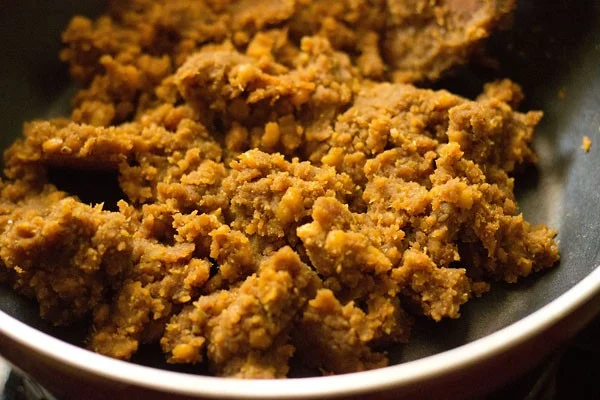9. Now mash the puran mixture very well with a potato masher or strainer. You need to mash the lentils thoroughly as the whole pieces of lentils may cause the dough to crack or tear while rolling.
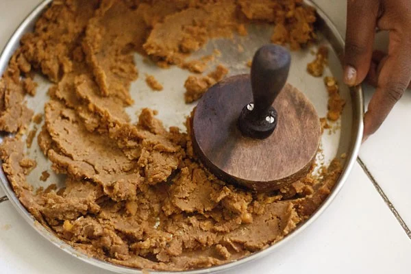Make Poli (Flatbread) Dough
5. Meanwhile while the sweet lentil filling is cooling, prepare your dough to make the outer cover or poli.
Take 1.5 cups whole wheat flour, 1 cup all-purpose flour and ½ teaspoon salt in a bowl. Mix well.
6. Add a little bit of water and 4 tablespoon ghee or oil and mix.
7. Begin to knead the dough, adding water as required. The dough should be smooth, supple and soft. Cover and rest the dough for 15 to 20 minutes.
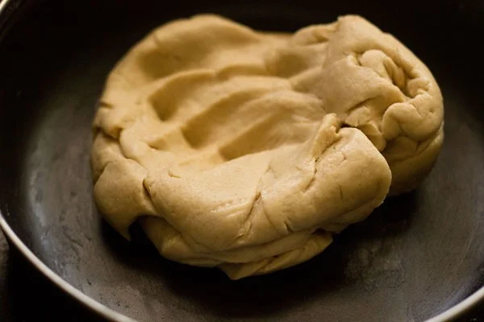Assemble and Roll
10: Take a medium or large size ball from the dough. With a rolling pin, roll it 2 to 3 inches in circumference on a dusted rolling board. Place a portion of puran mixture in the center of the rolled dough.
11. Bring the edges together towards the center as shown in the below pic.
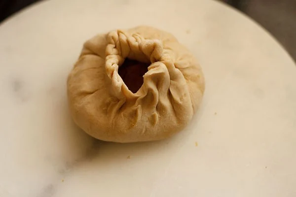12. Join all the edges and pinch them as shown in the picture below.

13. Sprinkle some flour and start rolling the dough.
14. Make a medium or large circle (poli) as depending upon the size of the dough and puran filling you took. The cover should be rolled rather thin, so you can almost see the filling beneath it.
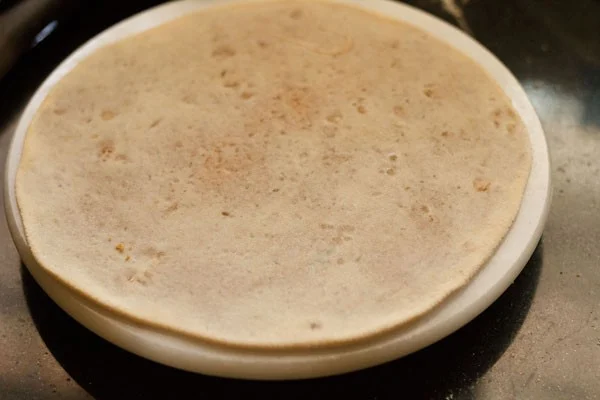Roast Puran Poli
15. On a heated tawa or griddle, spread some ghee.
16. Place the rolled poli/dough circle on the tawa.
17. When one side gets browned, turn over and cook the other side till you see some brown spots.
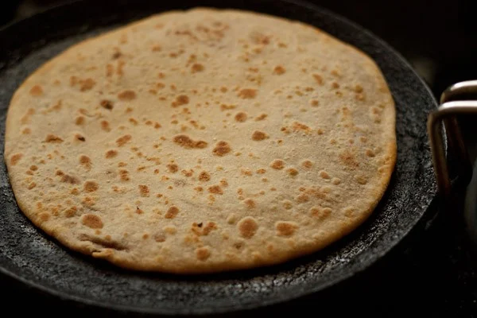18. Once the second side is brown, turn over and apply ghee. If everything is done properly then puran poli will puff up.
Make all pooran poli this way and stack them in a casserole or in a kitchen napkin.
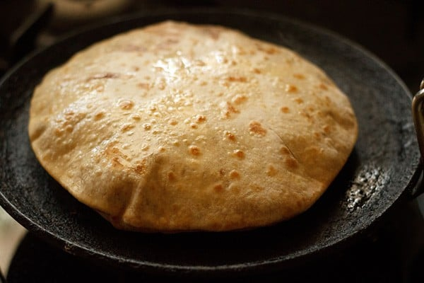19. You can serve puran poli warm or at room temperature with milk, ghee or curd (yogurt). Enjoy!
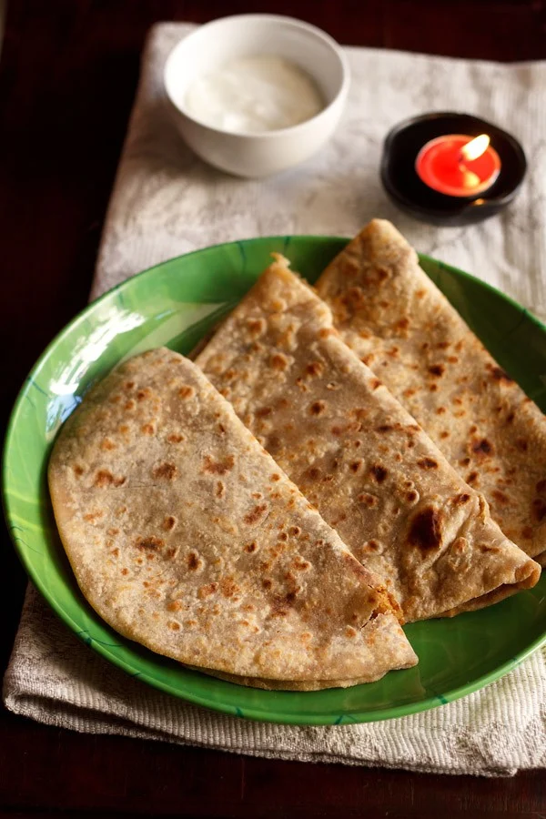